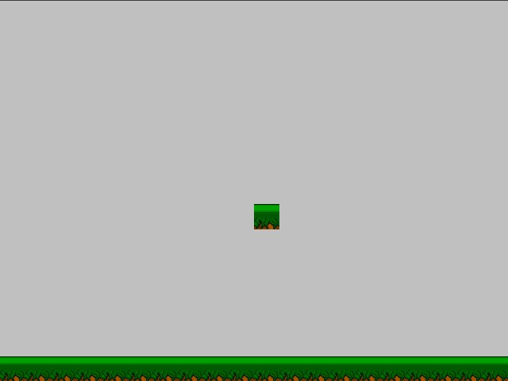
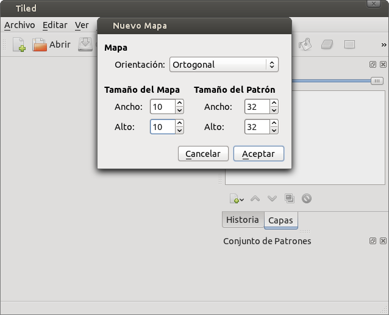
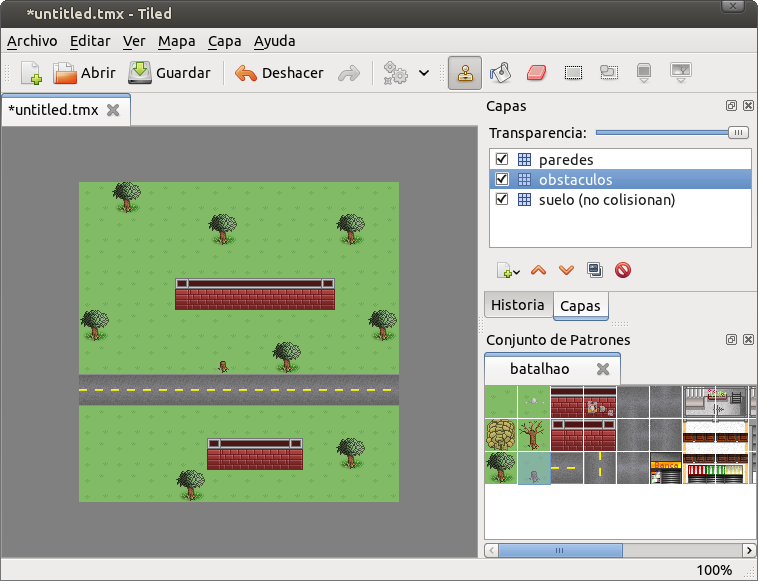
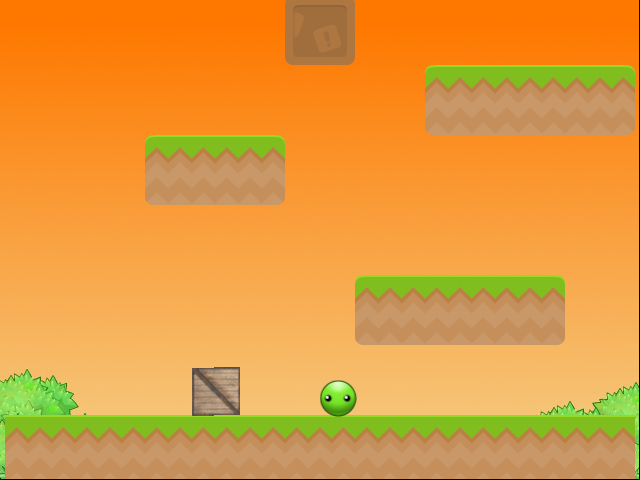

Mapas y plataformas
En los años 80 uno de los géneros de videojuegos mas celebrados ha sido el genero de plataformas.
En los juegos de este género el protagonista de la aventura estaba en un escenario armado de bloques y plataformas en donde podía saltar.
Uno de los juegos mas populares de esos días era Super Mario Bros.
Pilas incluye un actor llamado Mapa que te permite
hacer juegos de plataformas fácilmente.
Presentando el actor Mapa
El Mapa representa un escenario compuesto de bloques
que pueden ser plataformas, muros o simplemente adornos
del escenario.
Para crear un Mapa necesitas una grilla de gráficos con los bloques
que se usarán en el escenario. Luego puedes crear el Mapa:
grilla = pilas.imagenes.cargar_grilla("grillas/plataformas_10_10.png", 10, 10)
mapa = pilas.actores.Mapa(grilla)
Una vez que ejecutas esas sentencias no observarás cambios en la ventana, el mapa está, pero no tiene bloques aún.
Si quieres dibujar bloques solo tienes que indicar un índice de bloque y la posición en pantalla a dibujar.
Por ejemplo, un bloque cerca del centro de la ventana es la posición (8, 10):
mapa.pintar_bloque(8, 10, 1)

Otro ejemplo: si queremos dibujar en la parte inferior de la
ventana, podemos llamar muchas veces al método pintar_bloque, una
vez por cada bloque que necesitamos:
for columna in range(20):
mapa.pintar_bloque(14, columna, 1)
El primer y segundo argumento del método pintar_bloque indica
la posición en donde vamos a dibujar el bloque. En este caso la
fila será 14 y la columna será 0, 1, 2, 3, 4.. etc
El tercer argumento será el índice de la grilla que indicamos anteriormente.

Colisiones con el escenario
En los juegos de plataformas es muy importante que los bloques puedan interactuar con los jugadores. Por ejemplo habrá bloques que sirvan como plataformas y otros impedirán que avancemos como si se trataran de muros.
Los mapas de pilas te permiten crear esta interacción de manera
sencilla. El método que usamos antes pintar_bloque, le
dice al mapa que dibuje el bloque, pero a la vez te permite
indicar si ese bloque es sólido o no.
Diremos que un bloque es sólido cuando un personaje no puede pasar a través de él. Por ejemplo, una plataforma es un bloque sólido.
Entonces, cada vez que invocas al método pintar_bloque tienes
la posibilidad de indicar si el bloque es sólido o no:
mapa.pintar_bloque(14, 10, 1, es_bloque_solido=True)
mapa.pintar_bloque(14, 10, 1, es_bloque_solido=False)
Y ten en cuenta que si no especificas el último parámetro, pilas asumirá que el bloque debe ser sólido.
Por cierto, los bloques "no sólidos" son útiles para representar adornos del escenario, como nubes o agua. Incluso en algunos juegos se usan para crear pasadizos secretos entre muros o plataformas...
Creando mapas con el programa tiled
Crear los mapas directamente desde el código está bien, pero si tienes que hacer muchos mapas te llevará un montón de tiempo.
Una buena alternativa a esto es usar un software de diseño de escenarios, crear un archivo con todo el escenario y luego cargarlo desde pilas.
El software que te recomiendo para esta tarea se llama tiled
(ver http://www.mapeditor.org).
Veamos como usar tiled para crear un escenario sencillo, primero
tienes que crear un mapa desde el menú File, se le solicitará
indicar el tamaño del escenario:

Usa los valores por defecto, al menos por esta vez.
Luego tienes que ir al menú Map y luego New tileset para
indicar cual es la grilla de imágenes que usarás en los bloques. Te
recomiendo usar la imagen batalhao.png (de Silveins Neto), que
está en la carpeta de ejemplos de pilas:

Ahora, lo mas divertido, comienza a dibujar sobre el escenario seleccionando bloques. Observa que el programa tiene varias herramientas para hacer que esto sea mucho mas sencillo:

Luego, asegúrate de que el programa guarda todos los datos en formato CSV, esto
es importante para que se pueda vincular con pilas. Para esto tienes
que abrir el menú Edit y luego Preferences, la pantalla de opciones
te tiene que quedar así:

Listo, ahora solamente hay que guardar el mapa en un archivo. Ve al menú
File y luego selecciona Save as, tienes que darle un nombre
al archivo .tmx.
Luego, desde pilas, es muy simple, solamente tienes que crear
el actor mapa indicando el nombre del archivo .tmx que has
generado con el programa tiled:
import pilas
pilas.iniciar()
mapa_desde_archivo = pilas.actores.MapaTiled("archivo.tmx")
Creando bloques sólidos con tiled
Si quieres hacer bloques sólidos desde tiled solamente tienes que crear una capa especial. Si una de las capas comienza con el nombre "solido" entonces pilas hará que cada uno de los bloques sea interpretado como un bloque sólido.
Por ejemplo, en el escenario anterior, sería interesante colocar los bloques de pasto y la ruta en la capa que he llamado "suelo" y el resto de los objetos en otras capas que serán sólidas, en este caso "solido obstáculos" y "solido paredes":

Un ejemplo completo
Te recomiendo que observes el ejemplo mapa_desde_archivo.py del
directorio de ejemplos de pilas, podrás observar un escenario
muy simple con obstáculos y un personaje que se puede mover
con el teclado:

O bien, el ejemplo plataformas:
